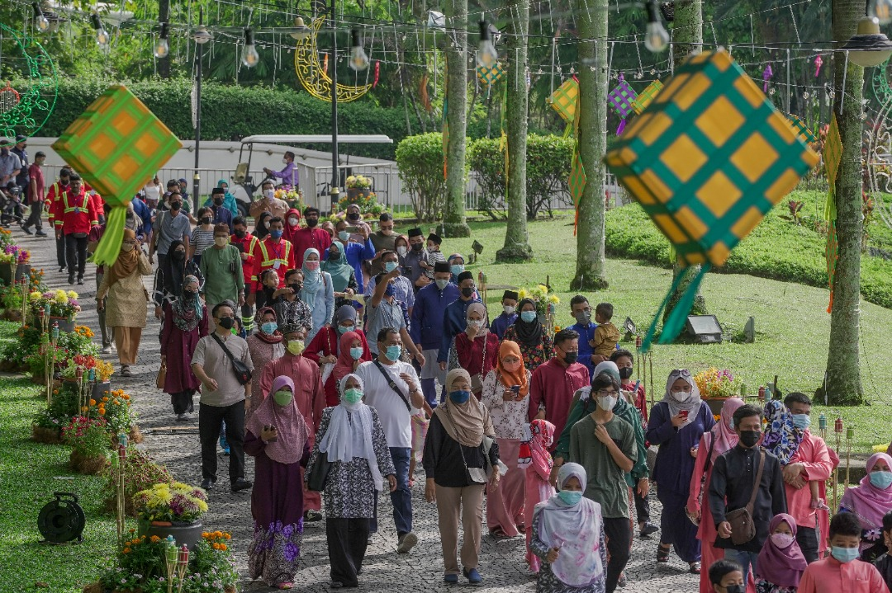
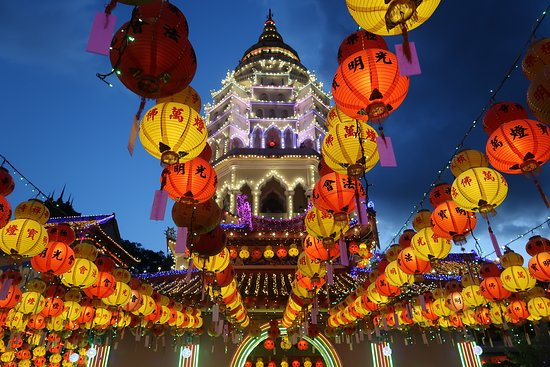
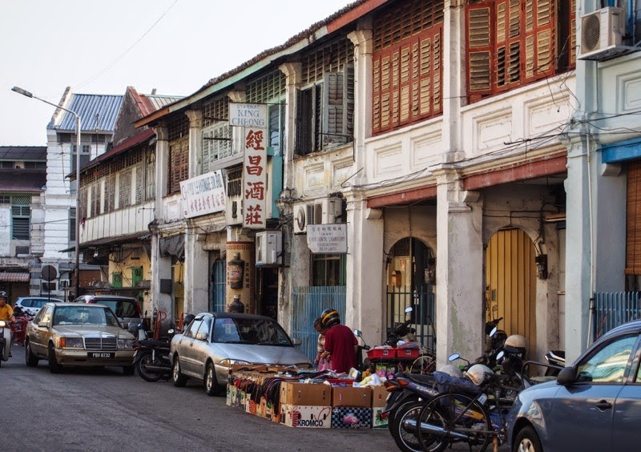

Get to know quickly
Malaysia is a country in Southeast Asia, on the Malay Peninsula, as well as on northern Borneo. The country is one of Asia's tiger economies, having seen great economic and human development during the last several decades. While the capital Kuala Lumpur is a cosmopolitan city, deep jungles cover vast swaths of the land.
Geography

Malaysia comprises two geographic regions, Peninsular Malaysia and East Malaysia, which are separated by the South China Sea. Peninsular Malaysia (Semenanjung Malaysia) occupies all of the Malay Peninsula between Thailand and Singapore, and is also known as West Malaysia (Malaysia Barat) or the slightly archaic Malaya (Tanah Melayu). It's home to the bulk of Malaysia's population, the capital and the largest city Kuala Lumpur, and generally more economically developed. Peninsular Malaysia consists of plains on both the East and West Coasts, separated from each other by a mountain range known as the Banjaran Titiwangsa, with the West Coast being more densely populated and generally more well-developed than the East Coast. Separated some 800 km to the east of Peninsular Malaysia is East Malaysia (Malaysia Timur). East Malaysia occupies the northern third of the island of Borneo, shared with Indonesia and tiny Brunei. Much of the development on East Malaysia is centred around the cities of Kuching, Miri and Kota Kinabalu. Outside of the major cities and smaller towns are impenetrable jungle where head hunters once roamed and coastal plains rising to mountains. East Malaysia is rich in natural resources and is very much Malaysia's hinterland for industry and tourism, though those who make the trip will find it to be a world-class ecotourism destination.
Climate
The climate in Malaysia is equatorial. The north-east monsoon (October to February) deluges Borneo and the East Coast of the Peninsula in rain and often causes flooding, while the West Coast (particularly Langkawi and Penang) escapes unscathed. The milder south-west monsoon (April to October) reverses the pattern. The southern and central parts of Peninsular Malaysia, including perennially soggy Kuala Lumpur, are exposed to both but even during the rainy season, the showers tend to be intense but brief. Malaysia is close to the equator, so warm weather is guaranteed. Temperatures generally range from 32°C (90°F) at noon to about 26°C (79°F) at midnight. But like most Southeast Asian countries, Malaysia's sun-shining days are interrupted by monsoon season every year, and night temperatures can hit a low of about 23°C (73°F) on rainy days. Temperatures tend to be cooler in the highlands, with the likes of Genting Highlands, Cameron Highlands and Fraser's Hill having temperatures ranging from about 17°C (63°F) at night to about 25°C (77°F) in the day. Mount Kinabalu is known to have temperatures falling below 10°C (50°F).
People
Malaysia is a multicultural society. While Malays (a branch of the Austronesian group) make up a 52% majority, 27% of Malaysians are Chinese (who are especially visible in the cities), 9% are Indians, 12% are members of aboriginal peoples (often called Orang Asli, Malay for "Original People"), and there is a miscellaneous grouping of 1.5% "others", including Thai communities in northern border states and the Portuguese clan in Malacca. The majority of the population (including virtually all Malays, as well as a significant minority of Indians) adhere to Islam, the official religion, and there are substantial minorities who practice Christianity, Buddhism, Taoism, Hinduism, Sikhism and Animism, which is allowed under constitution subject to the supremacy of Islam for example, it is illegal to proselytize other religions to Muslims.

Malaysia shares many cultural similarities with its neighbours, Brunei, Indonesia and Singapore due to their common history. As the first great kingdoms to emerge in the region were Hindu kingdoms with much influence from India, Malay culture has substantial Indian influences. This is most visible in Malay cuisine with its relatively heavy use of curries, albeit using local instead of Indian spices, meaning that Malay curries often have a unique local flavour that is different from their Indian counterparts. Malaysia's minorities also continue to maintain their own distinct cultures, with the Chinese and Indian communities continuing to preserve the traditions brought from their ancestral homelands.
In particular, Malaysia's ethnic Chinese community is considered to have preserved Chinese culture and language the best among all the overseas Chinese communities of the world. Moreover, as Malaysia was unaffected by the Cultural Revolution, the ethnic Chinese community of Malaysia has preserved many elements of traditional Chinese culture that have been lost in mainland China.  The multi-cultural national capital, home of the Petronas Twin Towers The capital of Penang and Malaysia's second largest city, famed for its colonial-era architecture, multi-cultural populace, food and arts scene The historical city of Malaysia with colonial-style architecture The capital of Perak, with a historic colonial old town and tin mining area Capital of Johor and Malaysia's third largest city, gate to the neighbouring Singapore Capital of Pahang and commercial centre of the East Coast Capital of Sabah, close to tropical islands, lush rain forest and Mount Kinabalu Capital of Sarawak, and largest city in East Malaysia Resort city of Sarawak located near the border of Brunei and gateway to UNESCO World Heritage Site, Gunung Mulu National ParkCulture
Cities
Kuala Lumpur
Georgetown
Malacca
Ipoh
Johor Bahru
Kuantan
Kota Kinabalu
Kuching
Miri